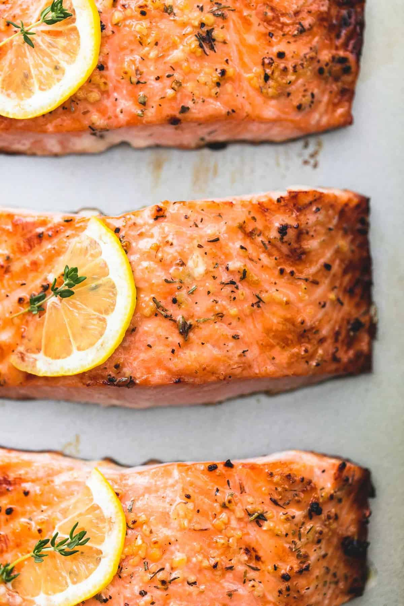

Salmon

Description
This is the very best Easy Healthy Salmon. Full of delicious lemon and garlic flavors!
Baked to a flaky, tender perfection and on the table in just 30 minutes!
Ingredients
- 4 salmon fillets - about 6 ounces each
- 2 tablespoons olive oil
- 1/2 teaspoon salt - or to taste
- 1/4 teaspoon cracked black pepper
- 2 teaspoons minced garlic
- 1 teaspoon Italian herb seasoning blend
- 1 medium lemon
Steps
Preheat oven to 400 degrees and grease a large baking pan. Arrange salmon fillets on the baking sheet and season generously with salt and pepper.
Stir together olive oil, garlic, herbs, and juice of 1/2 lemon. Spoon over salmon fillets being sure to rub all over the tops and sides of the salmon so it has no dry spots. Thinly slice remaining 1/2 of lemon and top each piece of salmon with a slice of lemon.
Bake for 12-15 minutes until salmon is opaque and flaky when pulled apart with a fork. You can broil the last 1-2 minutes if desired.
Garnish with fresh thyme or parsley if desired and serve.
Flavor Tip!
Swap out the lemon for lime and add a sprinkle of cilantro at the end!